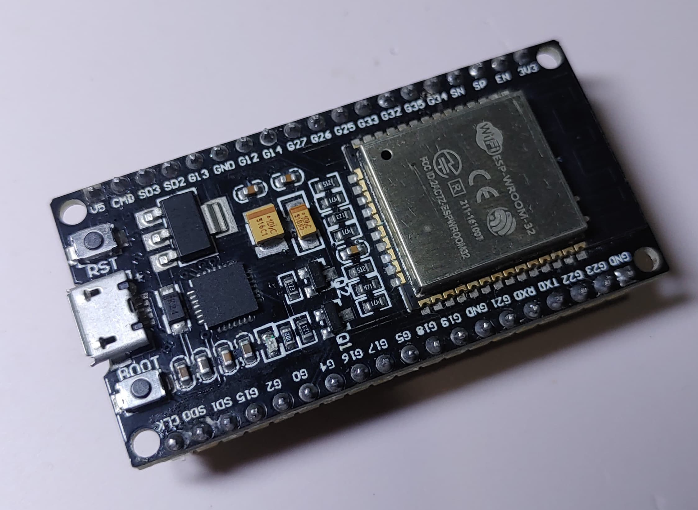

Components Used

ESP32 Wi-Fi Board
ZMPT101B AC Single Phase Voltage Sensor
SCT-013-030 Non-invasive AC Current Sensor
20x4 I2C LCD Display
Resistors
Capacitors
Circuit of the Project

- The circuit diagram for the IoT-based Electricity Energy Meter using ESP32 is shown below. The design was created using the Fritzing software and the connection diagram is simple. The VCC & GND pins of both the SCT-013 Current Sensor and ZMPT101B Voltage Sensor are connected to the Vin & GND of ESP32, which is a 5V supply. The output analog pin of the ZMPT101B Voltage Sensor is connected to the GPIO35 of ESP32 and the output analog pin of the SCT-013 Current Sensor is connected to the GPIO34 of ESP32. Additionally, two 10K resistors and a single 100-ohm resistor, along with a 10uF capacitor, are required to complete the circuit.
Set up Blynk IoT Cloud for the IoT-based Project


- Blynk is an application that runs over Android and IOS devices to control any IoT based application using Smartphones. It allows you to create your Graphical user interface for IoT application. Here we will display the IoT Energy Meter Data on Blynk Web Dashboard and also in mobile Application.Visit blynk.io and sign up using the email ID.First Create a New Template.Assign the name, Hardware & Connection Type.From the Web Dashboard, Create 4 widgets Gauge.The 4 widgets are here to display the value of Vrms, Irms, Power & KWh. Do the settings as per the image below.Finally the Web Dashboard looks something like this and is ready to receive the Smart Energy Meter Data from ESP32. Apart from the Web Dashboard, you can also set up your Mobile App Dashboard.You can download and install the Blynk Application from Google Play Store. IOS users can download from the App Store.Once the installation is completed, open the app & sign-up using your Email id and Password. Then set up the app similar like Web Dashboard.
Working
- The IoT Smart Electricity Energy Meter, utilizing the listed components, operates on the principle of real-time monitoring and data transmission for efficient energy management. The ESP32 Wi-Fi module serves as the central controller, orchestrating the integration of the ZMPT101B AC Voltage Sensor and SCT-013-030 Non-invasive AC Current Sensor. The voltage sensor measures the alternating current (AC) voltage, providing a proportional analog output. Simultaneously, the current sensor, which operates non-invasively, captures the AC current flowing through a conductor without direct contact. The ESP32 processes these sensor inputs, calculates power consumption, and displays the information on the 20x4 I2C LCD Display. The 10K and 100-ohm resistors, along with the 10uF capacitor, contribute to signal conditioning and filtering, ensuring accurate readings. The ESP32, equipped with Wi-Fi capabilities, facilitates seamless communication, enabling users to remotely monitor energy consumption patterns and make informed decisions for optimizing power usage. This interconnected system exemplifies the synergy of IoT technologies in creating a smart meter that not only measures electricity usage accurately but also empowers users to enhance energy efficiency and contribute to sustainable consumption practices.
Conclusion
- In conclusion, the utilization of ESP32 and Blynk 2.0 to create an IoT Based Smart Electricity Energy Meter will bring forth a groundbreaking transformation in the monitoring and measurement of electricity usage. By implementing this IoT-based solution, the need for manual meter readings is eliminated, resulting in saved time and cost. By employing high-quality current and voltage sensors, precise measurements of voltage, current, power, and total energy consumption can be acquired. The data can be accessed from any location through the Blynk 2.0 dashboard. Moreover, in the event of power outages, the energy meter data is securely stored in the EEPROM of the ESP32, ensuring uninterrupted readings.
Source Code
Click here